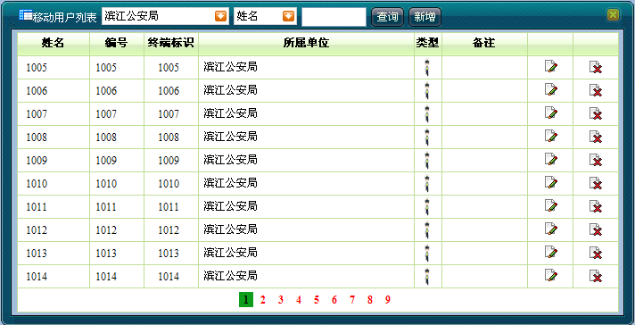
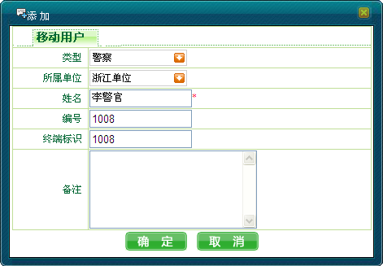

添加移动用户操作步骤如下：
添加移动用户操作步骤如下：
1）单击［基础信息/移动用户信息维护］，弹出移动用户列表，如下图1所示。

图1. 移动用户列表
2）单击＜新增＞，弹出“添加”移动用户对话框，用户输入新增用户的信息，如下图2所示。

图2. 添加移动用户
3）单击＜确定＞完成操作。如果添加成功，系统将向用户提示添加成功信息；如果添加失败，则向用户提示错误原因。
 说明：
说明：
分级调度员只能新增其所属单位及其子单位下的移动用户信息，无法增加调度员所在单位的上级和同级单位下的移动用户信息。
若添加的用户使用终端的标识号不存在或与其它移动用户重复，则添加移动用户失败。
Copyright © 2012 Eastcom, Inc. All rights reserved. |
||